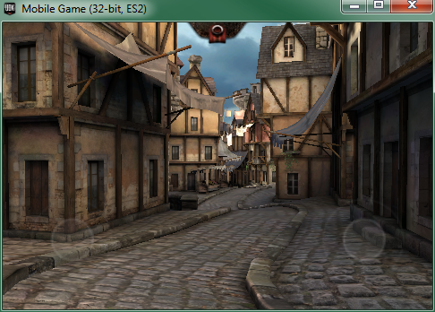
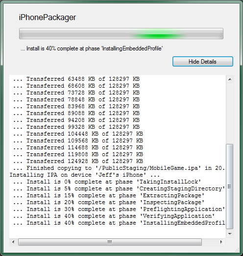
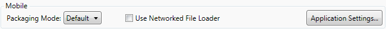
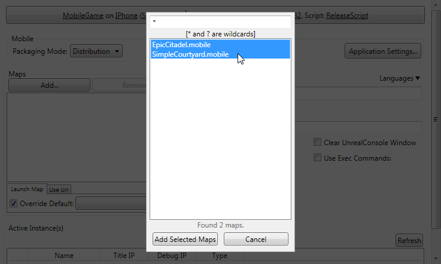
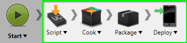
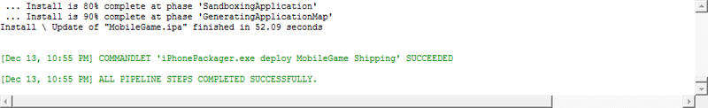

UDN
Search public documentation:
GettingStartediOSDevelopmentKR
English Translation
日本語訳
中国翻译
Interested in the Unreal Engine?
Visit the Unreal Technology site.
Looking for jobs and company info?
Check out the Epic games site.
Questions about support via UDN?
Contact the UDN Staff
日本語訳
中国翻译
Interested in the Unreal Engine?
Visit the Unreal Technology site.
Looking for jobs and company info?
Check out the Epic games site.
Questions about support via UDN?
Contact the UDN Staff
UE3 홈 > 모바일 홈 > 모바일 프로젝트 개발 시작하기 > iOS 개발 시작하기
UE3 홈 > 언리얼 엔진 3 시작하기 > 모바일 프로젝트 개발 시작하기 > iOS 개발 시작하기
UE3 홈 > 언리얼 엔진 3 시작하기 > 모바일 프로젝트 개발 시작하기 > iOS 개발 시작하기
시작하기: iOS 개발
문서 변경내역: Jeff Wilson 작성. 홍성진 번역.
개요
요구사항
시스템 요구사항
애플에 개발자로 등록하는 것에 추가로, iOS 게임을 개발하고 제출하는 데 관련된 하드웨어와 소프트웨어 요구사항도 있습니다.iOS 게임 개발하기
iOS 디바이스용 게임을 개발하기 위한 하드웨어 요구사항은, 언리얼 엔진 3로 게임을 만들 때의 일반적인 시스템 요구사항과 같습니다. 언리얼 에디터를 실행할 수 있는 PC가 필요합니다. 언리얼 엔진 3는 현재 다음과 같은 iOS 디바이스를 지원합니다:- 아이폰 4
- 아이폰 4s
- 아이폰 3GS
- 아이패드
- 아이패드2
- 아이팟 터치 4세대
- 아이팟 터치 3세대 (8 GB 제외)
- 윈도우 XP SP2 에 DirectX 9.0c 설치
- 2.0 GHz 이상 CPU
- 2 GB 이상 RAM
- 엔비디아 지포스 7800 등, 셰이더 모델 3.0을 지원하는 그래픽 카드
- iTunes
iOS 게임 제출하기
iOS 게임을 App Store 에 제출하기 위해서는 맥(Mac)에 접근해야 합니다. 애플은 MacOS X 에서만 가능한 Application Loader 를 사용해 업로드하도록 하고 있습니다. 다음 프로그램이 맥에 설치되어 있어야 합니다:- Application Loader
Provisioning
신규 사용자
신규 iOS 개발자의 경우, Provisioning 을 구성하고 UDK에서 사용할 Certificate 를 만드는 절차는 다음과 같습니다:- 키 쌍을 생성하고 Certificate 를 요청합니다.
- Certificate 와 Mobile Provision 을 생성합니다.
- UDK 로 Certificate 와 Provision 을 임포트합니다.
기존 개발자
기존 iOS 개발자이며 예전에 맥이나 PC에서 iOS 디바이스로 배치한 적이 있는 경우, Unreal iOS Configuration Wizard 의 Already a registered iOS developer (이미 등록된 iOS 개발자) 탭을 사용하여 UDK로 Signing ID 를 옮겨야 합니다. 여기에는 맥의 Keychain(키체인) 어플리케이션에서 기존 Development Certificate 를 회수하는 과정도 포함됩니다. 기존 개발자의 Provisioning 에 대해 자세한 것은 기존 Provisioning 옮기기 설명서를 참고해 주십시오.시험하기
Mobile Previewer
Mobile Previewer 는 모바일 디바이스의 렌더링 방식과 매우 유사하게 동작되는 OpenGL ES2 렌더러를 사용하여 PC에서 iOS 게임을 돌려볼 수 있습니다. 이로써 배치 과정을 거칠 필요 없이 게임을 1:1에 가깝게 미리볼 수 있습니다. 그래픽은 물론, 터치 콘트롤 같은 기능도 시뮬레이션 가능합니다.
PC에서 모바일 디바이스를 시뮬레이션하는 데 대한 상세 정보는 Mobile Previewer KR 페이지를 참고해 보시기 바랍니다.iOS 디바이스에서 플레이
언리얼 에디터 내에서 연결된 iOS 디바이스에 직접 맵을 시험해 볼 수도 있습니다. 언리얼 에디터 툴바에서 버튼을 클릭하면, 언리얼 에디터에 로딩된 현재 맵을 패키징하여 연결된 iOS 디바이스에 설치합니다.
맵의 패키징 및 전송 진행상황이 표시됩니다:
버튼을 클릭하면, 언리얼 에디터에 로딩된 현재 맵을 패키징하여 연결된 iOS 디바이스에 설치합니다.
맵의 패키징 및 전송 진행상황이 표시됩니다:


패키징 및 전송 절차가 완료되면, 디바이스의 다른 앱과 마찬가지로 게임을 플레이할 수 있습니다.
iOS 디바이스로 패키징 및 배치하기
-
버튼을 클릭하여 환경설정 세팅을 열어봅니다:

-
이와 같이 설정되었는지 확인하십시오:

버튼을 클릭하여 설정을 저장합니다.Game Platform Game Config Script Config Cook/Make Config MobileGameIPhoneShipping_32ReleaseScriptShipping_32 -
예전엔 안보였더라도 이제 Mobile 부분이 보일 것입니다. Packaging Mode 가 Default 로 되어 있는지 확인하십시오. 아니면 언리얼 프론트엔드가 패키징된 게임을 연결된 디바이스에 제대로 배치하지 못할 것입니다.

-
다음으로 어플에 포함시킬 맵을 전부 추가시킵니다. 이 작업은 maps 부분에서 가능합니다:
 버튼을 클릭합니다. 현재 게임 프로젝트에 있는 맵이 전부 나열되는 창이 열립니다.
버튼을 클릭합니다. 현재 게임 프로젝트에 있는 맵이 전부 나열되는 창이 열립니다.
 목록에서 추가시킬 맵을 전부 선택합니다:
목록에서 추가시킬 맵을 전부 선택합니다:

 버튼을 클릭하여 맵을 추가시키고 창을 닫습니다. 맵 목록에 해당 맵이 나열될 것입니다:
버튼을 클릭하여 맵을 추가시키고 창을 닫습니다. 맵 목록에 해당 맵이 나열될 것입니다:

-
디폴트로 맵이 로딩되도록 설정되었는지 확인하십시오:

-
아래 표시된 각 버튼을 클릭하고 각 단계별 메뉴의 Step Enabled 옵션을 토글시켜서, 파이프라인 잡 모든 단계가 켜졌는지 확인하십시오.

-
Start 버튼을 클릭하여 파이프라인 잡을 시작시킵니다. 파이프라인 잡의 진행 도중에는
 모양이 표시됩니다. 완료되고 나면 출력 창에 결과가 표시됩니다.
모양이 표시됩니다. 완료되고 나면 출력 창에 결과가 표시됩니다.

-
이제 디바이스의 다른 앱처럼 게임을 실행시킬 수 있습니다.